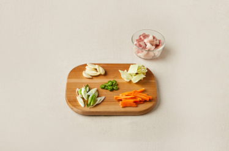
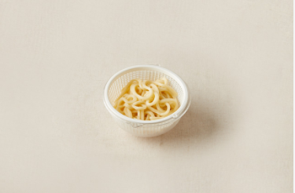
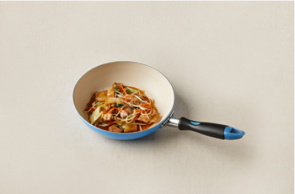
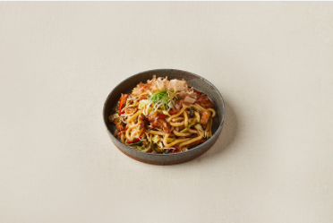

Japanese Food


재료 리스트
삼겹살 200g | 숙주 100g | 양배추 100g | 당근 30g |대파 1/4대 | 청양고추 2개 | 우동면 2개 | 마늘 3쪽 | 가쓰오부시 50g | 파래 1 작은술 |김가루 1작은술
레시피
1. 돼지고기는 2cm 폭으로, 양배추는 한입 크기로 썰고, 당근은 굵게 채 썬다.
청양고추는 쏭쏭 썰고 대파와 마늘는 얇게 펴서 어슷 썰어준다.

2. 끓는 물에 우동면을 살짝 데치고 체에 받펴서 물기를 제거한다.

3. 식용유를 두른 달군 팬에 마늘을 볶다가 돼지고기, 양배추, 당근, 우동면, 숙주, 대파, 청양고추를 순서대로 넣어 센 불에서 볶는다.
돼지고기가 익었다고 생각될 때쯤에 치킨 데리야끼 양념을 넣어 볶는다.

4. 마지막으로 접시에 담고 가쓰오부시와 파래 김가루를 뿌려준다.

삼겹살 데리야끼 볶음우동 완성 !!